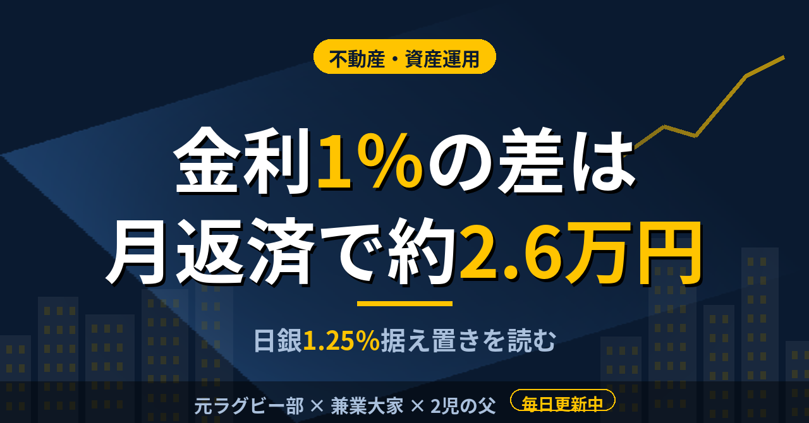

不動産・資産運用金利1％の差で月返済は約2.6万円。日銀の1.25％据え置きを大家候補が読んだ
2棟目を探していると、物件の数字より先に金利の話になることが増えた。10月30日の日銀会合の結果が出たので、何が決まり、返済額にどう響くのかを数字で確かめた。
政策金利は1.25％で据え置き、反対は1人
日銀は2026年10月30日の会合で、政策金利を1.25％に据え置いた。採決は8対1で、高田委員が1.5％への利上げを求めて反対している。直近の利上げは2026年9月だ。同じ日の午後、10年物国債の利回りは2.770％前後で推移していた。
据え置きは市場の予想どおりだった。ただ、反対票が出ているということは、利上げの議論が続いている証拠でもある。大和総研は、12月の会合で1.5％への利上げを予想している。これは民間の予測であって、日銀が決めたことではない。
銀行の貸出金利は、すでに動いている。健美家の記事が引いた統計では、国内銀行の新規の長期貸出金利は、2025年11月の1.425％から、2026年4月には1.790％まで上がった。企業向けを含む全体の平均で、アパートローンの実勢そのものではない。それでも、方向が上であることは読み取れる。
物件の価格は売主との交渉で動くが、金利は日銀の動きと銀行の評価で決まる。買う側が自分で動かせる部分は、意外と少ない。だから、動かせないものは前提として数字に織り込むしかない。
5,000万円を30年で借りると、1％の差は月約2.6万円
金利が上がると返済額がどう変わるのか。健美家の記事に、5,000万円を30年の元利均等で借りた場合の試算が載っている。月返済額は、金利2％で約18万5,000円、3％で約21万1,000円、4％で約23万9,000円だ。2％から3％で月に約2万6,000円増え、2％から4％まで上がれば年間で約65万円増える計算になる。
不動産投資ローンの変動金利は、短期プライムレートを基準にする商品が多い。同じ記事によれば、ある銀行の不動産投資ローンは、2026年7月時点で変動金利が年2.425〜4.425％と掲載されていた。下限と上限で2％の開きがある。政策金利が同じでも、物件や借り手の評価で、実際に提示される金利は変わる。
借入が大きいほど、金利の影響も大きくなる
利回りが同じ物件でも、金利の影響の出方は借入額で決まる。2棟目は融資比率を高めに狙う想定なので、金利が動いたときの返済額の振れ幅も大きくなる。上の試算は5,000万円の場合だから、借りる額が倍なら、月の増加額もおおよそ倍になる。
1棟目は表面利回り7.3％で、稼働95％の税引前キャッシュフローが年約208万円だった。この208万円は、金利が動けば最初に削られる部分だ。利回りの数字だけを見て買うと、返済額が増えた年に手元が薄くなる。逆に、利回りから金利を引いた余裕が大きいほど、金利の上昇には耐えやすい。この余裕を、購入前に一度は計算しておきたい。
金利は自分では決められない。決められるのは、金利が今より1〜2％高くなった前提でキャッシュフローを置き直し、それでも持てるかを買付の前に確かめることだ。数字が合わなければ見送る。見送る基準を先に決めておく方が、迷う時間は短くなる。
この記事は note にも掲載しています。